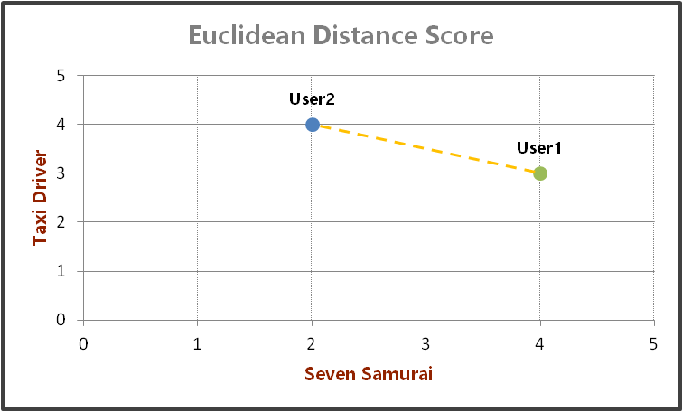
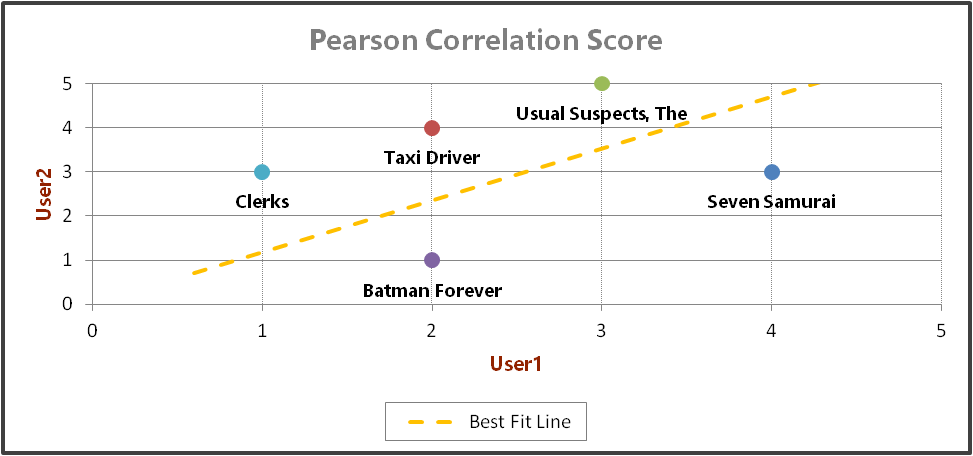
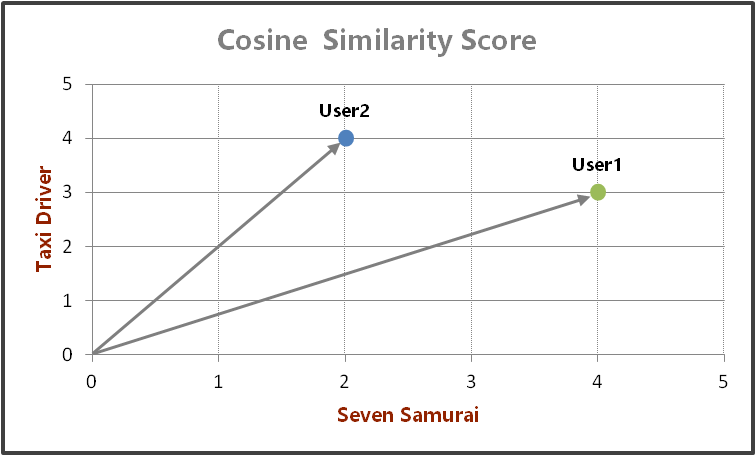

This post is a continuation of my previous post on Collaborative Filtering. In this post, I will detail some of the techniques available for calculating similarity scores.
A Quick Recap
Collaborative Filtering (CF) is a technique used in creating recommendation systems. This technique relies on a dataset of user preferences to provide recommendations to individual users.
There are three categories of CF algorithms - User-based, Item-based and Hybrid.
- User-based algorithms calculate the most similar users to a specific user and use this data to generate recommendations
- Item-based algorithms create a model of the relationships between items and calculate recommendations based on this model
- Hybrid algorithms combine both of the above approaches
The similarity between users is calculated based on a metric known as similarity score. The rest of the post will focus on three algorithms that are used to determine similarity score.
Similarity Score Algorithms
There are many algorithms that can be used to calculate similarity scores. For the purposes of this post, I will cover only the following three algorithms
- Euclidean Distance-based Score
- Pearson Correlation Score
- Cosine Similarity Score
All of these algorithms calculate a similarity score where a higher number indicates greater similarity. Since the similarity scores are normalized the highest similarity score is 1, which indicates that two users are identical.
Euclidean Distance-based Score
Concept
Euclidean distance is the straight line distance between two points. Consider a graph with only 2 axes which correspond to user ratings of 2 movies, i.e., the X-axis corresponds to the user ratings of the movie 'Seven Samurai' and the Y-axis corresponds to the user ratings of 'Taxi Driver'. If we have 2 users, User and User2, and plot them according to their ratings for these two movies on the graph, we would get something like this

As shown in the graph above, the Euclidean distance is the straight-line distance between the two users.
The mathematical formula to calculate it is
$d(x,y) = \sqrt{ \sum\limits_{i=1}^n (x_i - y_i)^2}$
While similarity is the measure of how similar items are, distance is the measure of their dissimilarity. Thus, the Euclidean distance between User1 and User2 tells us how dissimilar they are. In order to use this information in our Recommendation system, we have to convert it to a similarity metric.
Thus, the mathematical expression to convert the Euclidean distance-based similarity score is
$\dfrac{1}{1 + \sqrt{ \sum\limits_{i=1}^n (x_i - y_i)^2}}$
Implementation
Consider a simple dataset of movie ratings with users - User1 and User2
ratings = {
'User1': {
'Seven Samurai': 4, 'Taxi Driver': 3,
'Usual Suspects, The': 3, 'Clerks': 1,
'Batman Forever': 2, 'Nosferatu': 4},
'User2': {
'Seven Samurai': 2, 'Taxi Driver': 4,
'Usual Suspects, The': 5, 'Clerks': 3,
'Batman Forever': 1}}
The Python snippet will calculate the Euclidean Distance on only those movies that both the users have added ratings for.
The snippet to calculate the similarity is
def calcEuclideanSim(user1, user2):
# Get the list of similar movies
similarMovies = [movie for movie in ratings[user1]
if movie in ratings[user2]]
# If there are similar movies calculate similarity score, else similarity score is 0
similarityScore = 0
if(len(similarMovies) != 0):
euclDistance = Decimal(sum(
pow(ratings[user1][movie] - ratings[user2][movie], 2)
for movie in similarMovies))
similarityScore = 1 / (1 + euclDistance)
return similarityScore
Pearson Correlation Score
Concept
The Pearson Correlation score is used to understand the linear correlation between datasets which in turn helps us understand their similarity. Consider the following graph which has 2 axes - the X-axis for User1 and the Y-axis for User2. Thus, each point on the graph corresponds to the user ratings for a specific movie.

The shown best-fit line is the straight line that best fits all the data points of the two datasets. The slope of this best-fit line gives us the correlation between the two datasets. The values for the Pearson Correlation range from -1 to +1 where -1 indicates no correlation i.e. no similarity and +1 indicates perfect correlation i.e. perfect similarity.
The mathematical formula to calculate Pearson Correlation score is
$r = \dfrac{n(\sum\limits_{i=1}^n x_iy_i) + (\sum\limits_{i=1}^n x_i) (\sum\limits_{i=1}^n y_i)}{\sqrt{[n\sum\limits_{i=1}^n x_i^2 - (\sum\limits_{i=1}^n x_i)^2][n\sum\limits_{i=1}^n y_i^2 - (\sum\limits_{i=1}^n y_i)^2]}}$
Grade Inflation
In the real world, users are human beings that have differing opinions about the meaning of different ratings. User1 might be more lenient in her ratings and give a rating of 3 to a movie she considers average. On the other hand, User2 might be harsher and for her an average movie deserves a rating of 2.
This variance is known as Grade Inflation. While the previous Euclidean approach does not address this issue, the Pearson Correlation score is one algorithm which can be used to fix this problem.
Implementation
Let us again take the above datasets of User1 and User2 such that
ratings = {
'User1': {
'Seven Samurai': 4, 'Taxi Driver': 3,
'Usual Suspects, The': 3, 'Clerks': 1,
'Batman Forever': 2, 'Nosferatu': 4},
'User2': {
'Seven Samurai': 2, 'Taxi Driver': 4,
'Usual Suspects, The': 5, 'Clerks': 3,
'Batman Forever': 1}}
The Python snippet calculate Pearson Correlation is
def calcPearsonSim(user1, user2):
def calcSqrtExpr(n, a, b):
return sqrt(n * a - pow(b, 2))
prodSum = 0
sum1 = 0
sum2 = 0
sum1Sq = 0
sum2Sq = 0
n = 0
for movie in ratings[user1]:
if movie in ratings[user2]:
rating1 = ratings[user1][movie]
rating2 = ratings[user2][movie]
prodSum += rating1 * rating2
sum1 += rating1
sum2 += rating2
sum1Sq += pow(rating1, 2)
sum2Sq += pow(rating2, 2)
n += 1
## Calculate numerator
num = n * prodSum - sum1 * sum2
## Calculate denominator
denom = calcSqrtExpr(n, sum1Sq, sum1) * calcSqrtExpr(n, sum2Sq, sum2)
r = 0
if denom > 0:
r = num / denom
return r
Cosine Similarity Score
Concept
Cosine Similarity is the the cosine measure between two vectors i.e. if we have two vectors User1 and User2 then their Cosine Similarity is the cosine of the angle between the two vectors.
Consider 2 vectors User1 and User2 with only 2 elements corresponding to the ratings for the movies 'Seven Samurai' and 'Taxi Driver' as shown below

The Cosine Similarity is the cosine of the angle between User1 and User2.
The mathematical expression to calculate Cosine Similarity is
$cos(x, y) = \dfrac{\sum\limits_{i=1}^n x_iy_i}{\sqrt{\sum\limits_{i=1}^n x_i^2} \sqrt{\sum\limits_{i=1}^n x_i^2}}$
Implementation
We use the same dataset for User1 and User2 again
ratings = {
'User1': {
'Seven Samurai': 4, 'Taxi Driver': 3,
'Usual Suspects, The': 3, 'Clerks': 1,
'Batman Forever': 2, 'Nosferatu': 4},
'User2': {
'Seven Samurai': 2, 'Taxi Driver': 4,
'Usual Suspects, The': 5, 'Clerks': 3,
'Batman Forever': 1}}
and the list of all the movies
movies = ['Seven Samurai', 'Taxi Driver',
'Usual Suspects, The', 'Clerks',
'Batman Forever', 'Nosferatu']
The Python code will be
def calcCosineSim(user1, user2):
def calcLength(user):
return sqrt(sum(
pow(ratings[user][movie], 2) for movie in ratings[
user]))
user1Length = calcLength(user1)
user2Length = calcLength(user2)
dotProd = 0
for movie in movies:
dotProd += ratings[user1].get(
movie, 0) * ratings[user2].get(
movie, 0)
similarityScore = dotProd / (user1Length * user2Length)
return similarityScore
Conclusion
Thus, I have covered 3 algorithms used to calculate similarity scores and their corresponding Python code. But, calculating these scores is only an intermediate step in generating recommendations. In the next post, I will show how we can use these similarity scores to actually generate recommendations for users.